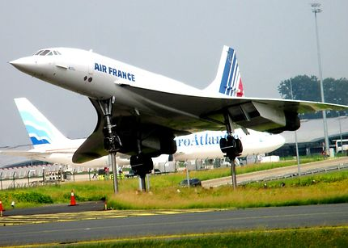
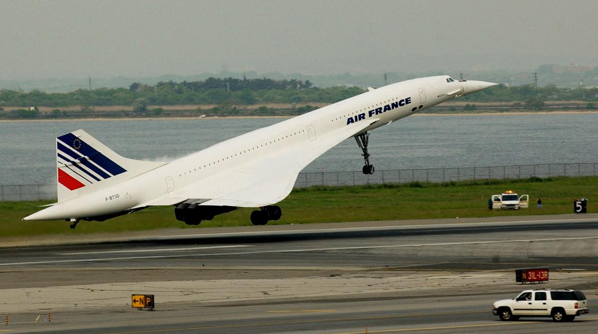

 
Le cncorde est le promière avion supersonique comerciale.
Il reliait paris et New York en seulement 3h30 au lieu de 7h30.
C'était la seul liaison qui lui était autorié car il ui était interdit de passer
le mur du son au dessus des terres.